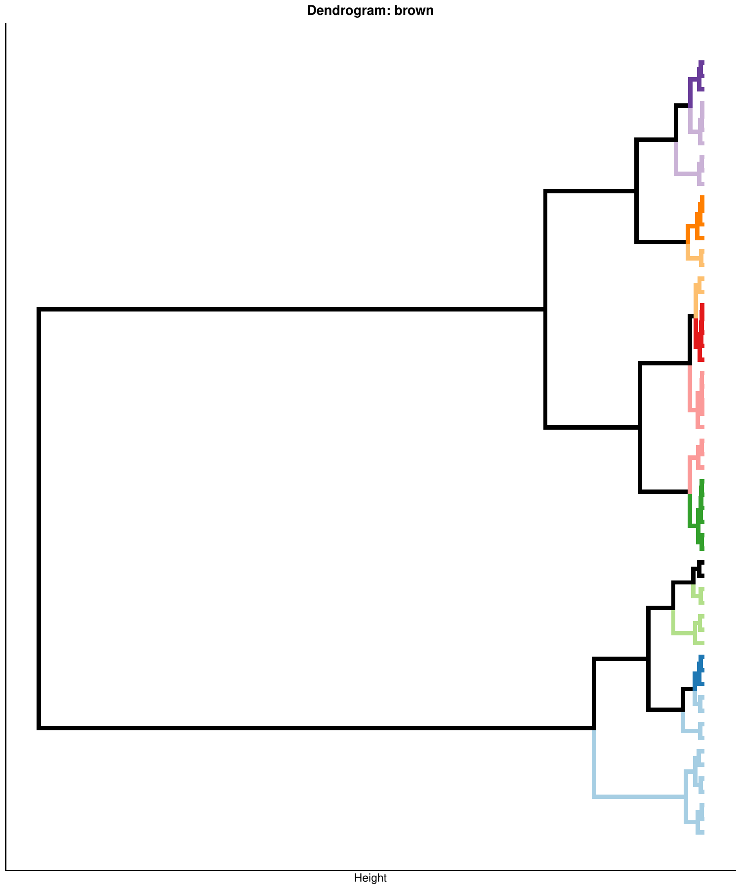
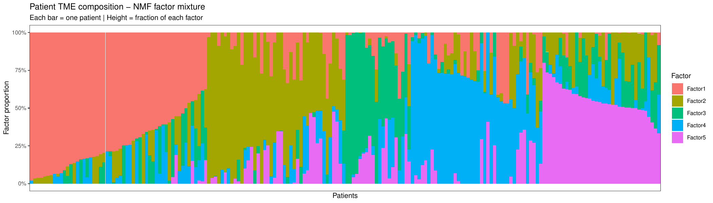
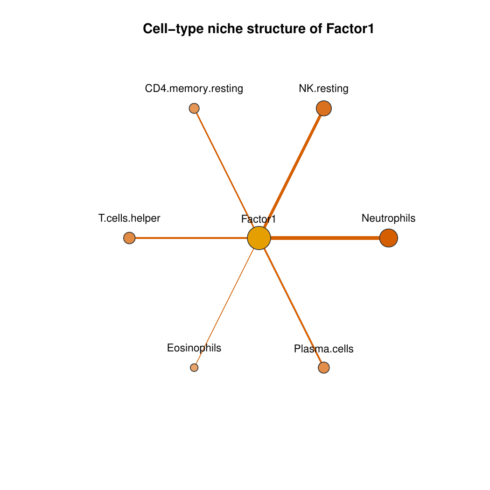

Cell Group Construction and Latent Factors
02-cell-groups.Rmd
library(CellTFusion)
#>
#> This article covers the core analytical steps of CellTFusion: identifying cell groups from TF modules and deconvolution data, extracting latent factors, and deriving cell niches. These steps require outputs from the Feature Computation article:
-
network— WTCNA TF modules fromcompute.WTCNA() -
dt— reduced deconvolution groups frommultideconv::compute.deconvolution.analysis() -
latent_spaces— NMF latent factors fromcompute.latent_factors()
Construct cell groups
Cell groups are identified by correlating TF module eigengenes with
deconvolution subgroups and cutting the resulting dendrogram. The
function takes only two primary inputs — network and
dt — both produced in the feature computation step.
cell_groups <- construct_cell_groups(
network = network,
dt = dt,
batch = NULL, # pass batch vector if multi-cohort
pval = 0.05,
clustering.method = "ward.D2",
n_perm = 999,
dendrogram_file = NULL,
return_dendrogram = FALSE
)For multi-cohort data, pass the same batch vector used in
compute.WTCNA() and
compute.deconvolution.analysis() — see the Batch/Multi-cohort Analysis
article:
batch_vec <- traitdata[, "Cohort"]
cell_groups <- construct_cell_groups(network, dt, batch = batch_vec, pval = 0.05)Unsupervised vs. supervised cell groups
construct_cell_groups() itself has no notion of a
clinical trait — its arguments are the same in both modes. The
unsupervised/supervised distinction happens upstream, at the TF
activity level, inside compute.TFs.activity() /
CellTFusion(task = ...):
-
Unsupervised (
task = "unsupervised"):compute.TFs.activity()is run on the full normalized expression matrix. TF modules (and therefore cell groups) reflect TF co-activity patterns across all genes, without reference to any clinical outcome. -
Supervised (
task = "supervised"): a differential expression analysis (run_deg_analysis()) is first run between two groups defined bycontrastandref_level. TF activity is then computed twice — once on the DEGs (tfs_deg) and once on the full matrix (tfs_mat) — and the full TF activity matrix is subset to only the TFs found relevant to the DEGs (tfs <- tfs_mat[, colnames(tfs_mat) %in% colnames(tfs_deg)]). This restricts the downstream TF network — and hence the resulting cell groups — to TFs whose activity differs between the two clinical groups of interest.
In other words: construct_cell_groups() always
runs the same unsupervised correlation/clustering procedure; what
changes between “unsupervised” and “supervised” runs of
CellTFusion() is which TFs feed into
compute.WTCNA() in the first place.
# Unsupervised: TF activity computed on all genes
res_unsupervised <- CellTFusion(
raw.counts = raw.counts,
normalized = TRUE,
coldata = traitdata,
task = "unsupervised",
return = TRUE
)
# Supervised: TF activity restricted to TFs relevant to the DEGs of the contrast
res_supervised <- CellTFusion(
raw.counts = raw.counts,
normalized = FALSE, # raw counts required for DEG analysis
coldata = traitdata,
task = "supervised",
contrast = "Best.Confirmed.Overall.Response",
ref_level = "PD",
return = TRUE
)Output structure
construct_cell_groups() returns a three-element
list:
| Element | Description |
|---|---|
[[1]] |
Data frame of composite scores (samples × cell groups) |
[[2]] |
Named list of cell-type compositions per group |
[[3]] |
Named list of TF loading vectors per group |
Results are also written to
Results/Cell.groups.composition.csv and
Results/Cell.groups.scores.csv. Passing
dendrogram_file (and return_dendrogram = TRUE)
additionally saves, per TF module, the dendrogram of correlated
cell-type features that gets cut into cell groups:

Extract latent factors
Cell group scores are decomposed into NMF latent factors to obtain a
compact, non-negative representation of the TME landscape. The
rank argument controls the number of factors; if
NULL, it is selected automatically.
latent_spaces <- compute.latent_factors(
X = cell_groups[[1]],
rank = NULL,
seed = 123,
file_name = "Tutorial",
return = TRUE
)The result is a list whose $Z element is a samples ×
factors matrix — the primary input for downstream statistical tests and
machine learning.
# Access the factor scores matrix (samples x factors)
head(latent_spaces$Z)When return = TRUE, a stacked bar plot summarizing each
patient’s mixture of latent factors is saved to
Results/:

Extract cell niches
Cell niches are derived from latent factors by enriching each factor for specific cell-type signals from the deconvolution output. This step characterises each latent factor with a biological cell-type context.
cells_niches <- compute_cells_niches(
latent_spaces = latent_spaces,
dt = dt,
cell.groups = cell_groups,
enrich_thresh = 1.5,
quantile_cutoff = 0.7,
return = TRUE,
file_name = "Tutorial"
)For each enriched latent factor, a star-network plot is saved showing which cell types define its niche (edge width reflects enrichment strength):

Next steps
With latent_spaces in hand, you can:
- Characterise TME states via GSEA and meta-program mapping → TME States
- Test clinical associations of latent factors → Statistical Analysis
-
Train ML models on
latent_spaces$Z→ Machine Learning